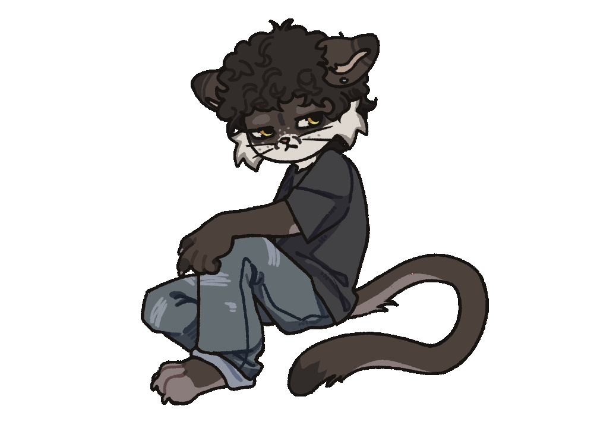
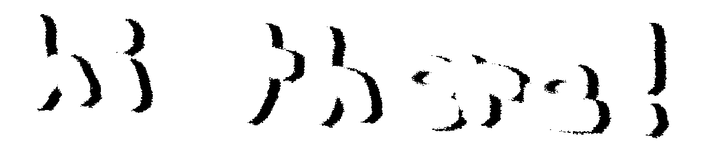

hi, my name is bruce. i'm a (amatuer) web dev, photographer and graphic designer. i really like learning new things and meeting new people. i try to be as friendly as possible! so don't feel intimidated


welcome to my page. this mainly acts as a bio page for people to click on and scroll through and hopefully get to know me!
this website is constantly changing and having stuff added to it, please feel free to poke around!
🎮 warhammer 40k space marine 2, fallout 76, overwatch
📺 nothing atm
📚 chainsmoker cat
📝 being silly
find me here..